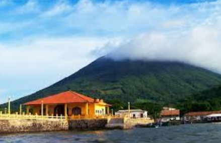
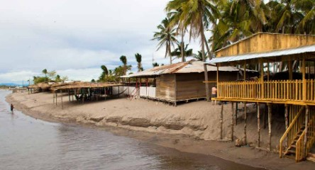
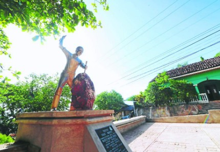
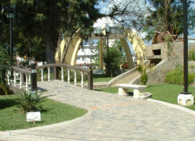

La cercana ciudad portuaria de San Lorenzo es el puerto primordial en la costa del Pacífico de Honduras. Todos los productos que ingresan a Honduras por medio del Golfo de Fonseca llegan por medio de este puerto. El Golfo de Fonseca es una zona encantadora y única. Es rico en manglares y pequeñas islas. De pie en la costa, puedes ver muchas de las islas, así como volcanes en los tres países diferentes. La Isla del Tigre con una forma cónica casi perfecta se destaca dentro del golfo.

Hay numerosas cosas diferentes que hacer en Choluteca. Las playas más populares están cerca de Cedeño. Aquí, muchos turistas de Tegucigalpa visitan durante las vacaciones. La playa es única por su origen volcánico. Esto hace que la arena sea negra, así que asegúrate de utilizar sandalias de playa para evitar quemarte los pies. En Cedeño consigues encontrar todo tipo de comida y bebida en las champas de playa que están justo en la playa .

Consigue ver la presencia colonial de los españoles en muchos de los pueblos pequeños en el departamento de Choluteca. Uno de los sitios más encantadores cerca de Choluteca es la localidad colonial de El Corpus. En el Corpus, hallarás una iglesia colonial construida a la entrada de una antigua mina de plata.

Esta es una de las cosas más usuales que hacer en Choluteca. Visita al parque central. Hallarás que la antigua catedral colonial domina el parque. Edificada durante la época colonial, la iglesia está consagrada a la Inmaculada Concepción. Su edificación se encumbra a 1785, durante el período colonial español tardío en Honduras. El último edificio no se concluyó hasta 1918.